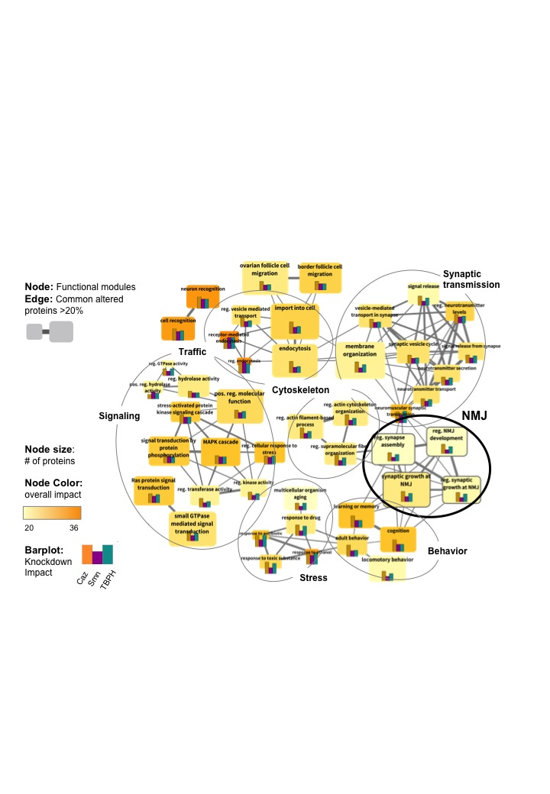
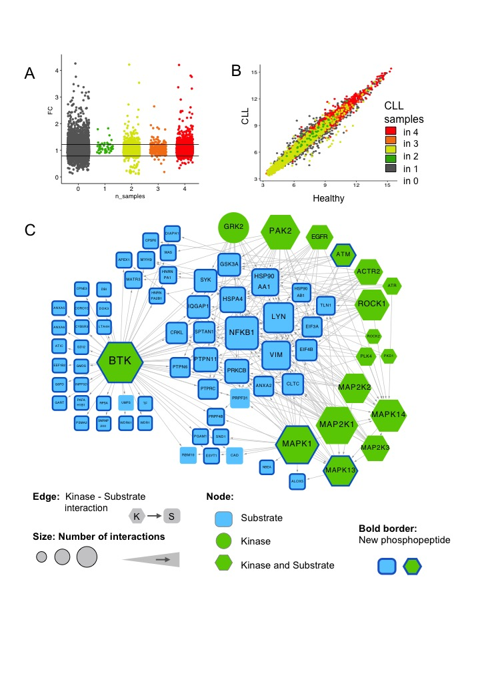
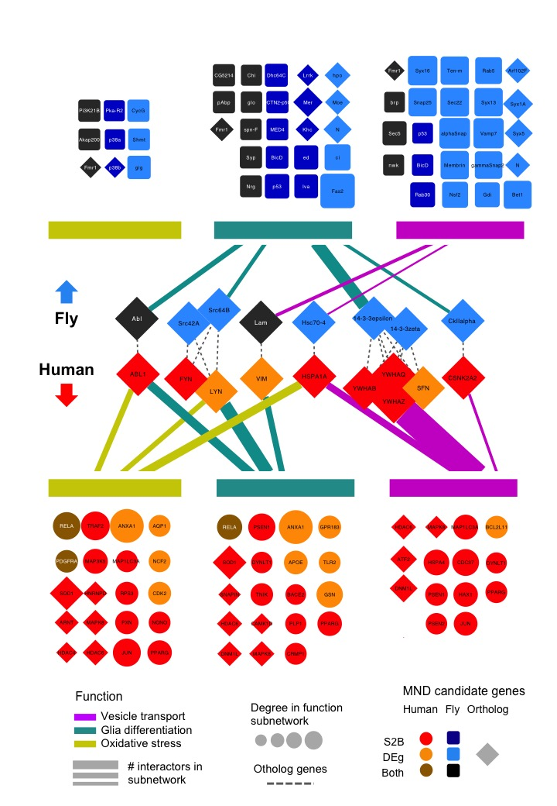
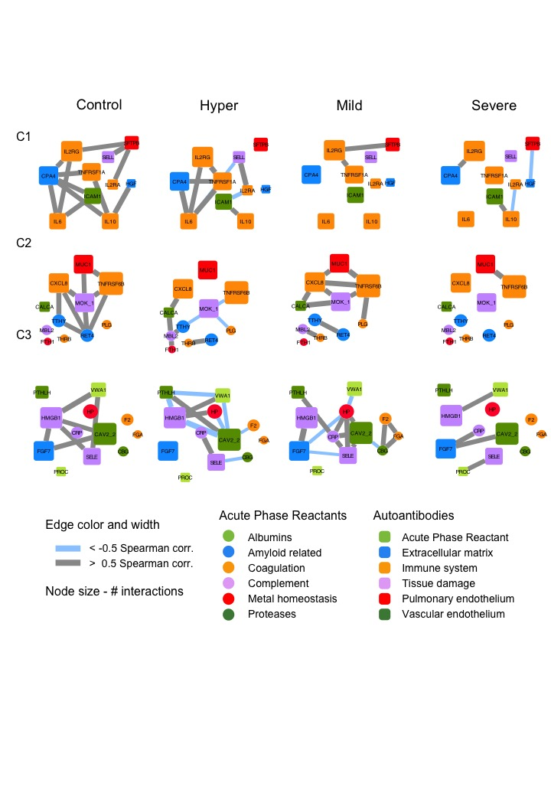
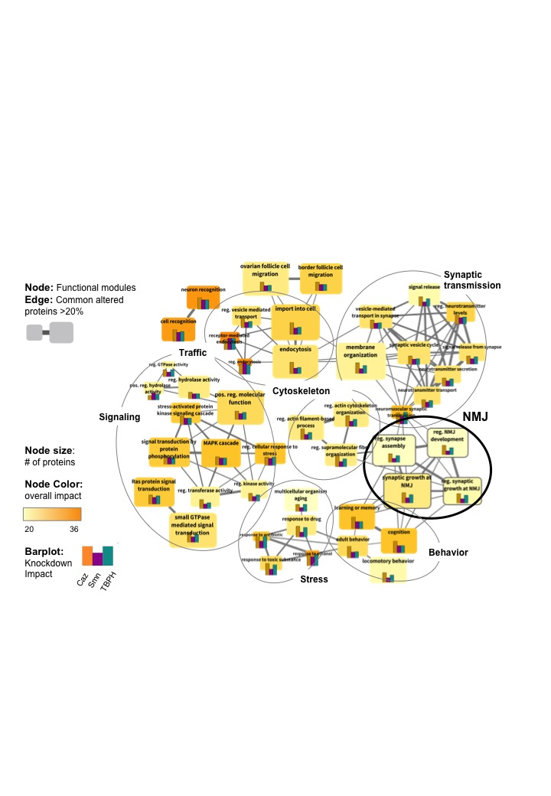
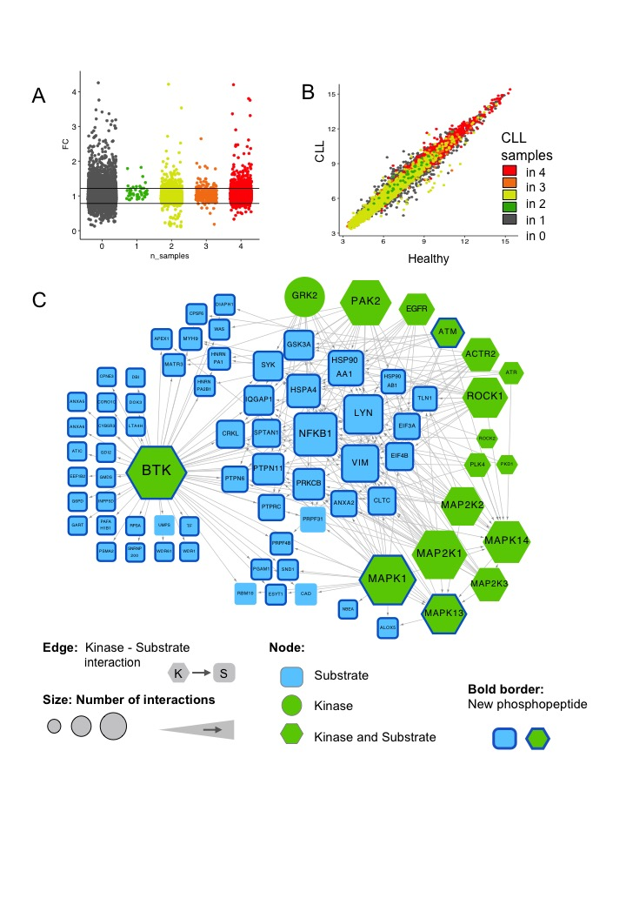
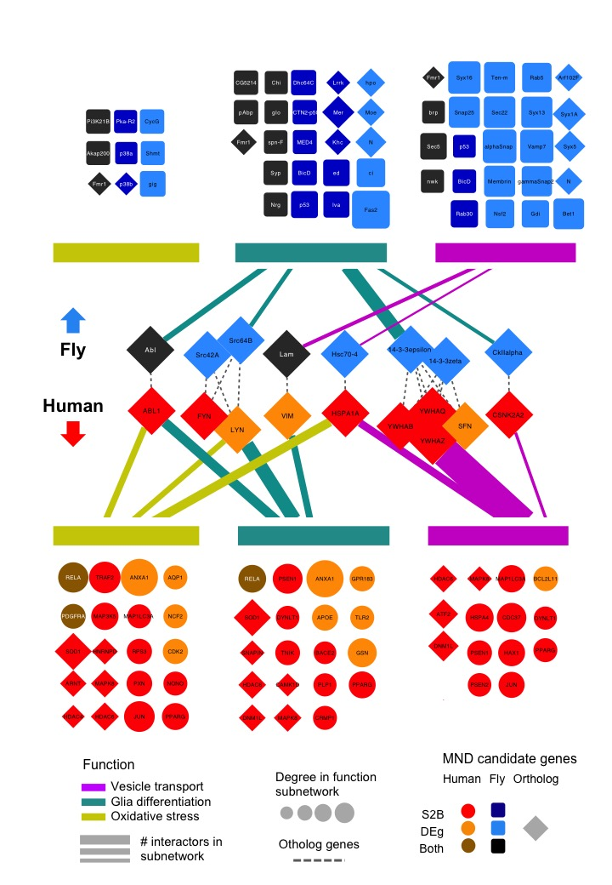
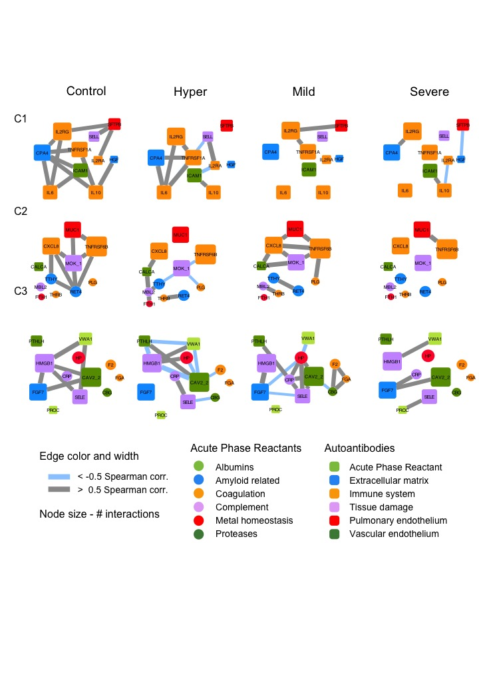

Hi, I am
MARINA LUQUE
Welcome to my portfolio! Here you will find a sample of the projects I have carried out as a data scientist during more than 8 years of experience in biomedical research.
I am a multidisciplinary data scientist
I have studied various fields of biomedical sciences
to then establish my career in computational biology and biostatistics.
I have successfully delivered a wide variety of research projects, covering the entire pipeline from
Extract, Transform, Load (ETL) processes to Exploratory Data Analysis (EDA), constructing Machine Learning (ML) models and crafting visually impactful dashboards.
Tech Skills
- Python & R Programming
- SQL, MongoDB & PostgreSQL
- Tableau & Power BI: Viz & Dashboards
- API & Selenium Web Scraping
- Bash, Git: Version Control & Collab
- HTML CSS: Web Basics
- MS Office: Excel, PowerPoint, Word
Soft Skills
- Agile & analytical thinker
- Problem solver & creative
- Team player
- Extrovert & proactive
- International experience
Academic Background
PhD, MSc, BSc
- Data Analytics Bootcamp - Ironhack
- Statistics & Machine Learning
- Pharma & Biochemistry
- Genetics, Molecular & Cell Biology
- Evolutionary & Environmental Biology
My career in Numbers
| > 8 Years | of Experience in Biomedical Data Analysis |
| > 30 Projects | in Biomedical Research |
| 1 PhD | Summa Cum Laude & Nominee for 2022 Award of Excellence ULisboa |
| 15 Articles | in high impact journals |
| > 20 Comms. | in international congresses and symposia |
| > 5 Grants | both congress participation and study fellowships |
| 4 Languages | Spanish, English, Portuguese, Basque |
| 7 Cities | in Spain and Portugal |
Seeing is believing !
Next you will find some of my most illustrative projects:
"Just" data?
To unlock its true potential, data must be thoroughly analyzed.
For that purpose, data exploration is essential for delineating the optimal plan of action.
The images presented on this portfolio have been altered to protect the confidentiality of the research findings.
Therefore, the underlying scientific information should be dismissed. The figures are the result of artistic work and, as such, no legal rights can be claimed by any research institution.
Seeking Patterns
Pattern identification uncovers key clues to understand our context and thus, generate actionable knowledge.
The images presented on this portfolio have been altered to protect the confidentiality of the research findings.
Therefore, the underlying scientific information should be dismissed. The figures are the result of artistic work and, as such, no legal rights can be claimed by any research institution.
A life filled with contrasts
Light cannot exist without darkness. Contrasting hypotheses enable us to reveal significant differences.
The images presented on this portfolio have been altered to protect the confidentiality of the research findings.
Therefore, the underlying scientific information should be dismissed. The figures are the result of artistic work and, as such, no legal rights can be claimed by any research institution.
Connecting the dots
Business, life, and social interactions are complex and highly interrelated. Network analysis aims to model the dynamic nature between these relationships.
The images presented on this portfolio have been altered to protect the confidentiality of the research findings.
Therefore, the underlying scientific information should be dismissed. The figures are the result of artistic work and, as such, no legal rights can be claimed by any research institution.
 








Exploit hidden relationships
Correlation and regression models are crucial for making valuable predictions and informed decisions.
The images presented on this portfolio have been altered to protect the confidentiality of the research findings.
Therefore, the underlying scientific information should be dismissed. The figures are the result of artistic work and, as such, no legal rights can be claimed by any research institution.
Mix it up!
Every project presents unique challenges that demand creative solutions.
The images presented on this portfolio have been altered to protect the confidentiality of the research findings.
Therefore, the underlying scientific information should be dismissed. The figures are the result of artistic work and, as such, no legal rights can be claimed by any research institution.
Index
The images presented on this portfolio have been altered to protect the confidentiality of the research findings.
Therefore, the underlying scientific information should be dismissed. The figures are the result of artistic work and, as such, no legal rights can be claimed by any research institution.